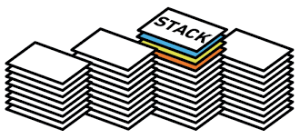

<!DOCTYPE html>
<html lang="en">
  <head>
    <meta charset="utf-8" />
    <meta name="viewport" content="width=device-width, initial-scale=1.0, maximum-scale=1.0, user-scalable=no" />

    <title>reveal-md</title>
    <link rel="stylesheet" href="./css/reveal.css" />
    <link rel="stylesheet" href="./css/theme/black.css" id="theme" />
    <link rel="stylesheet" href="./css/highlight/zenburn.css" />
    <link rel="stylesheet" href="./css/print/paper.css" type="text/css" media="print" />
    <link rel="stylesheet" href="./static/slides/css/filminas.css" />

  </head>
  <body>
    <div class="reveal">
      <div class="slides"><section  data-markdown><script type="text/template"><!doctype html>
<html lang="es">
<head>

    <link href='images/code.ico' rel='shortcut icon' type='image/x-icon'>
    <meta charset="utf-8">

    <title>Pilas</title>
    <meta name="description" content="Pilas">
    <meta name="author" content="
    Ricardo Martin Marcucci
">

    <meta name="apple-mobile-web-app-capable" content="yes">
    <meta name="apple-mobile-web-app-status-bar-style" content="black-translucent">
    <meta name="viewport" content="width=device-width, initial-scale=1.0, maximum-scale=1.0, user-scalable=no">
    <link rel="stylesheet" href="https://use.fontawesome.com/releases/v5.2.0/css/all.css" integrity="sha384-hWVjflwFxL6sNzntih27bfxkr27PmbbK/iSvJ+a4+0owXq79v+lsFkW54bOGbiDQ" crossorigin="anonymous">
    <link rel="stylesheet" href="css/reveal.css">
    <link rel="stylesheet" href="css/theme/league.css" id="theme">

    <link rel="icon" href="https://www.iua.edu.ar/wp-content/uploads/sites/6/2016/12/favicon.png" sizes="32x32" />
    <link rel="icon" href="https://www.iua.edu.ar/wp-content/uploads/sites/6/2016/12/favicon.png" sizes="192x192" />
    <link rel="apple-touch-icon-precomposed" href="https://www.iua.edu.ar/wp-content/uploads/sites/6/2016/12/favicon.png" />

    <!-- Theme used for syntax highlighting of code -->
    <link rel="stylesheet" href="lib/css/zenburn.css">
    <link rel="stylesheet" href="css/filminas.css">
    <script src="js/JSCPP.es5.min.js">__SCRIPT_END__
    <script src="js/runcpp.js">__SCRIPT_END__

    <!-- Printing and PDF exports -->
    <script>
        var link = document.createElement( 'link' );
        link.rel = 'stylesheet';
        link.type = 'text/css';
        link.href = window.location.search.match( /print-pdf/gi ) ? 'css/print/pdf.css' : 'css/print/paper.css';
        document.getElementsByTagName( 'head' )[0].appendChild( link );
    __SCRIPT_END__

    <!--[if lt IE 9]>
    <script src="lib/js/html5shiv.js">__SCRIPT_END__
    <![endif]-->
</head>

<body>

<div class="reveal">

    <!-- Any section element inside of this container is displayed as a slide -->
    <div class="slides">


<section>
    <h1>Pilas</h1>
    

    <p>
        <small>Created by
            <a href="https://t.me/rmarku" target="_blank">
                <i class="fab fa-telegram-plane"></i>rmarku
            </a>
        </small>
    </p>
</section>


<h1>Pilas</h1>


<p>
    <small>Created by
        <a href="https://t.me/rmarku" target="_blank">
            <i class="fab fa-telegram-plane"></i>rmarku
        </a>
    </small>
</p>
</section>


<section>
    <h2>Pilas</h2>
    <p>Una pila es una colección ordenada de elementos en la que pueden insertarse y suprimirse elementos por un extremo
        llamado tope
    </p>
    
</section>
<section>
    <h2>Pilas</h2>
    Las pilas son estructuras que se encuentran frecuentemente en la vida diaraia. Algunos ejemplos se encuentran en la
    forma en que se acomodan los platos en algunas cafeterías, la manera en que se colocan libros en un escritorio, una
    lata de pelotas de tenis o bien algunas tareas que se desean realizar. una lata de pelotas de tenis o bien al
</section>
<section>
    <h2>Pilas</h2>
    Por ejemplo, la forma en que se acomodan los libros en un escritorio puede verse de la siguiente manera: se puede
    añadir un libro a una pila poniéndolo hasta arriba de todos, se puede ver qué libro se encuentra hasta arriba y de
    esta misma forma si se desea retirar uno, se tomará el se desea retirar uno, se tomará el último que se colocó.
    
</section>
<section>
    <h2>Pilas</h2>
    <br>
    La propiedad anterior se conoce como LIFO ( Last In First Out ) , es decir, el último en entrar será el primero en
    salir y al que se tenga acceso. Otros nombres con los que se conoce a las pilas son 'lista empuja hacia abajo'
    (pushdown list ) y UEPS (últimas entradas primeras salidas).
</section>
</div>
</div>

<script src="lib/js/head.min.js">__SCRIPT_END__
<script src="js/reveal.js">__SCRIPT_END__

<script>
    // More info https://github.com/hakimel/reveal.js#configuration
    Reveal.initialize({
        history: true,

        // More info https://github.com/hakimel/reveal.js#dependencies
        dependencies: [
            {src: 'plugin/markdown/marked.js'},
            {src: 'plugin/markdown/markdown.js'},
            {src: 'plugin/notes/notes.js', async: true},
            {src: 'plugin/math/math.js', async: true},
            {
                src: 'plugin/highlight/highlight.js', async: true, callback: function () {
                    hljs.initHighlightingOnLoad();
                }
            }
        ]
    });
__SCRIPT_END__
</body>
</html>

</script></section></div>
    </div>

    <script src="./js/reveal.js"></script>

    <script>
      function extend() {
        var target = {};
        for (var i = 0; i < arguments.length; i++) {
          var source = arguments[i];
          for (var key in source) {
            if (source.hasOwnProperty(key)) {
              target[key] = source[key];
            }
          }
        }
        return target;
      }

      // Optional libraries used to extend on reveal.js
      var deps = [
        { src: './plugin/markdown/marked.js', condition: function() { return !!document.querySelector('[data-markdown]'); } },
        { src: './plugin/markdown/markdown.js', condition: function() { return !!document.querySelector('[data-markdown]'); } },
        { src: './plugin/highlight/highlight.js', async: true, callback: function() { hljs.initHighlightingOnLoad(); } },
        { src: './plugin/zoom-js/zoom.js', async: true },
        { src: './plugin/notes/notes.js', async: true },
        { src: './plugin/math/math.js', async: true }
      ];

      // default options to init reveal.js
      var defaultOptions = {
        controls: true,
        progress: true,
        history: true,
        center: true,
        transition: 'default', // none/fade/slide/convex/concave/zoom
        dependencies: deps
      };

      // options from URL query string
      var queryOptions = Reveal.getQueryHash() || {};

      var options = extend(defaultOptions, {"controls":true,"progress":true,"slideNumber":true}, queryOptions);
    </script>

    <script src="./static/slides/js/pruebas.js"></script>
    <script src="./static/slides/js/init.js"></script>

    <script>
      Reveal.initialize(options);
    </script>
  </body>
</html>
